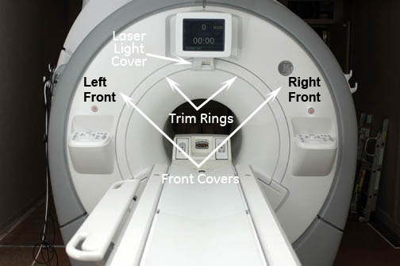
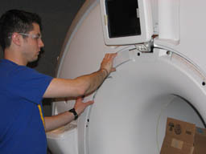
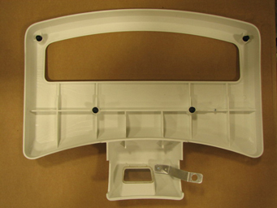
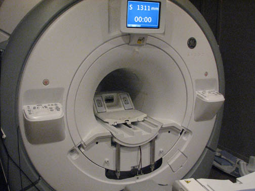
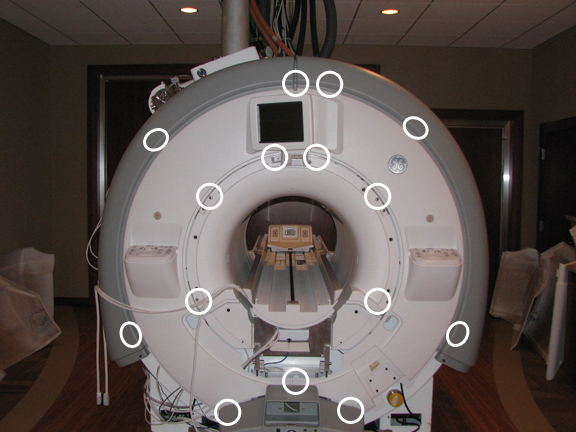
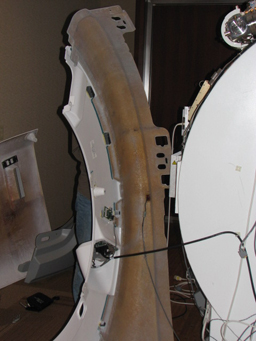

Operating Documentation
Direction 5500113, Rev# 3
Discovery MR450 1.5T Service Methods
Module Version 4.0, Version Date 12/9/09
Operating Documentation |
| Required Persons | Preliminary Reqs | Procedure | Finalization |
|---|---|---|---|
| 1 | Not Applicable | 15 (see Procedure Overview for details) | 15 mins |
The front covers are in two pieces and contain the emergency stop and control panels for the system. Removing the front left cover is necessary when replacing the ambient room temperature sensor.
| Item | Qty | Effectivity | Part# | Manufacturer | |
|---|---|---|---|---|---|
| Non-ferrous M5 Allen Wrench | 1 | - | - | - | |
| Cut-Resistant Gloves | 1 Pair | - | - | - | |
| Item | Qty | Effectivity | Part# | Manufacturer | |
|---|---|---|---|---|---|
| Front Cover | 1 | - | - | - | |
| ||||
| Strong Magnetic Field! | ||||
| Ferrous materials can become dangerous projectiles in the presence of the magnetic field Produced by the Magnet. | ||||
| Do not Bring any ferromagnetic tools or equipment into the magnet room. |
Follow all lockout/tagout procedures by turning off the applicable breaker in the PDU (see Lockout/Tagout for RF and PEN Cabinets and Magnet Room Electronics).
Illustration 1: In-Room Display Front Covers

Undock the patient table, and position the table away from the magnet.
Remove the side cover.
Remove the skirt cover.
For an In-Room Display system:
Remove the alignment laser light cover by unscrewing the two (2) screws. The cover is held in place by a popper on the lower left corner and snaps off. See Illustration 2.
Illustration 2: Removing the Laser Light Cover

Remove the two trim rings by pulling away from the enclosure. They are held in place by four (4) poppers on each side. See Illustration 3.
Illustration 3: Removing the Trim Ring

For a 7-Segment Display system:
Remove the left trim ring.
Remove the one (1) screw holding the 7-Segment Display bezel.
Remove the right trim ring. See Illustration 4.
Illustration 4: 7-Segment Display Bezel

For both systems, remove the two (2) M6 screws that secure the front bridge cover. See Illustration 5.
Illustration 5: Front Bridge Cover Screws

Illustration 6: Front Bridge Cover Removed

Remove the front cover(s) by unscrewing the seven (7) screws on the left-hand front cover and the six (6) screws on the right-hand front cover. Unscrew the two (2) additional screws shared by both sides. There are fifteen (15) screws total. See Illustration 7.
| NOTE: | Please be careful of the operator control panel connection cables. |
Illustration 7: Unbolting the Front Cover

To free each front cover, disconnect the cables that connect the control panel to the magnet (see Replacing Operator Display and Control Panels). Also, see Illustration 8.
Illustration 8: Left Front Cover

Reverse the steps to install the replacement front cover.
For the In-Room Display system:
Whenever the In-Room display or trackball control panels are disconnected and then reconnected, the host PC needs to be rebooted.
After reboot, from the Common Service Desktop, select Diagnostics, then Hardware, then Magnet Room, then In Room Display
The diagnostic will display the current status of the IRD and trackball connectivity. If status is not installed, recheck connections, reboot, and check the In Room Display diagnostic again.
For the 7-Segment Display system, check the functionality of the item replaced. Run the associated diagnostic, if necessary: From the Common Service Desktop, select Diagnostics, then Hardware Location, then Magnet Room, then SRI Functional Tests.